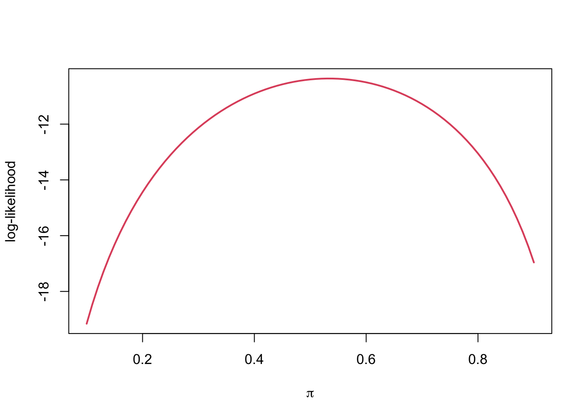
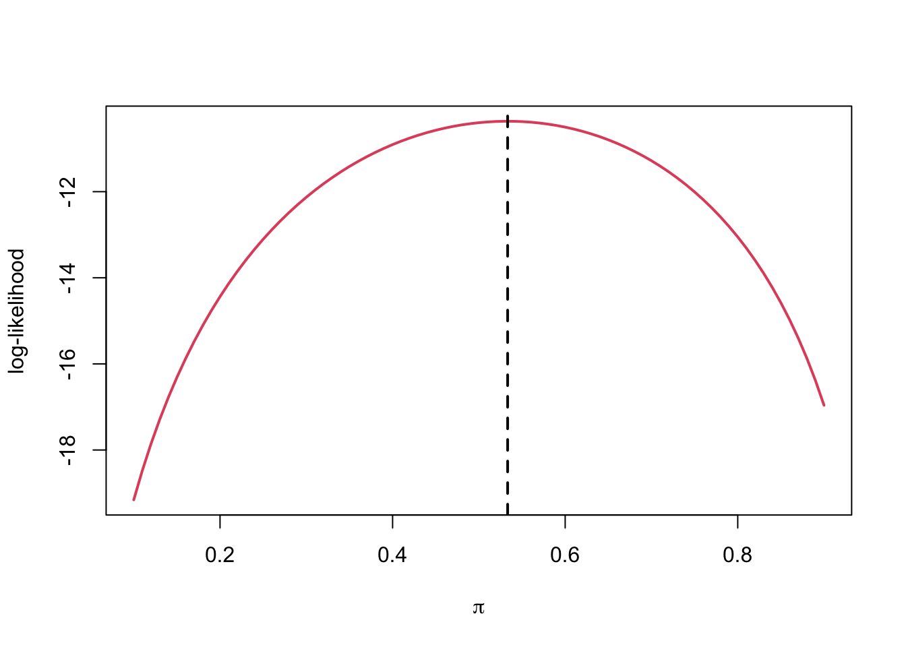
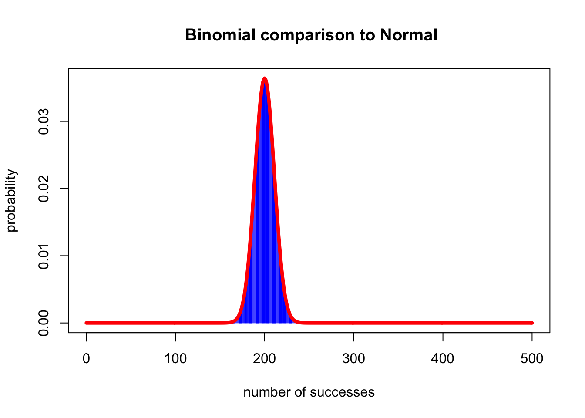
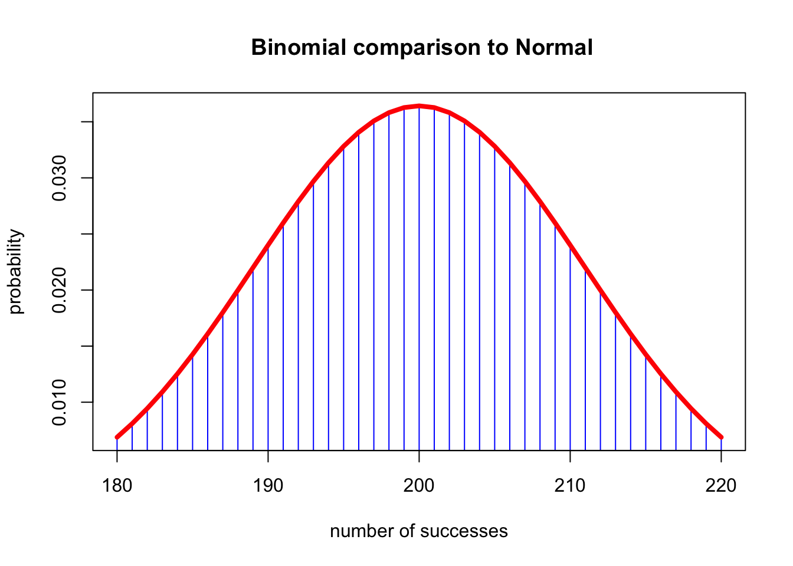

\[ p_{Y}(y)=\sum_{n=0}^{n}\left(\begin{array}{l}n \\ k\end{array}\right) \pi(1-\pi) \quad y=0,1, \ldots, n \]
\[ p_{Y}(y)=\sum_{n=0}^{n} y \times\left(\begin{array}{l}n \\ k\end{array}\right) \pi(1-\pi)=n \pi \]
\[ E(P)=E\left(\frac{Y}{n}\right)=\frac{E(Y)}{n}=\frac{n \pi}{n}=\pi \]
Method of Moments
a way of estimating parameters, based on matching a moment of the data-generating distribution with the related moment of the empirical distribution
\[ L(\theta)=\prod_{i=1}^{n} p\left(x_{i} \mid \theta\right) \]
\[ l(\theta)=\sum_{i=1}^{n} \log p\left(x_{i} \mid \theta\right) \]
Suppose that we want to test whether a coin is fair, i.e., if the probabilities that it lands on “heads” or “tails” are the same. We can flip the coin a few times, say \(n=15\) and see how many times it give “heads” (\(x=1\)) or “tails” (\(x=0\)). Then \(Y=X_1+...+X_n\) is a **binomial random variable, \(Y~B(n, \pi)\).
\[ X_{i} \sim B(1, \pi) \]
\[ L(\pi)=\prod_{i=1}^{n} \pi^{x_{i}}(1-\pi)^{1-x_{i}}, \quad x_{i} \in\{0,1\} \]
\[ \begin{aligned} l(\pi) &=\sum_{i=1}^{n} x_{i} \log \pi+\left(1-x_{i}\right) \log (1-\pi) \\ &=n {\log }(1-\pi)+(\log \pi-\log (1-\pi)) \sum_{i=1}^{n} x_{i} \end{aligned} \]
Rset.seed(1)
(x <- rbinom(15, size = 1, prob = .5))## [1] 0 0 1 1 0 1 1 1 1 0 0 0 1 0 1loglik <- function(pi, data) {
sum(log(dbinom(data, size = 1, prob = pi)))
}
loglik(pi = .5, data = x) %>% round(3)## [1] -10.397loglik(pi = .4, data = x) %>% round(3)## [1] -10.906pis <- seq(0.1, 0.9, by = 0.01)
ll <- sapply(pis, loglik, data = x)
plot(pis, ll, type = 'l', col = 2, lwd = 2,
xlab = expression(pi),
ylab = 'log-likelihood')
\[ \begin{aligned} \frac{d l(\pi)}{d \pi}=& \frac{1}{\pi(1-\pi)} \sum_{i=1}^{n} x_{i}-\frac{n}{1-\pi} \\=& \frac{\sum_{i=1}^{n} x_{i}-n \pi}{\pi(1-\pi)} \\=& 0 \\ & \hat{\pi}=\frac{1}{n} \sum_{i=1}^{n} x_{i} \end{aligned} \]
Rplot(pis, ll, type = 'l', col = 2, lwd = 2,
xlab = expression(pi),
ylab = 'log-likelihood')
abline(v = mean(x), lty = 2, lwd = 2)
\[ \operatorname{Bias}=E[\hat{\theta}]-\theta \]
\[ E[\hat{\theta}]=\theta \]
\[ M S E[\hat{\theta}]=E\left[(\hat{\theta}-\theta)^{2}\right]=\operatorname{Var}(\hat{\theta})+\operatorname{Bias}(\hat{\theta})^{2} \]
\[ \begin{array}{c}1) \lim _{n \rightarrow \infty} \operatorname{Pr}\left(\left|\hat{\theta}_{n}-\theta\right|>\varepsilon\right)=0 \\ 2) \lim _{n \rightarrow \infty} M S E\left(\hat{\theta}_{n}\right)=0\end{array} \]
\[ M S E(P)=\operatorname{Var}(P)+\operatorname{Bias}(P)^{2}=\frac{\pi(1-\pi)}{n}+0 \]
\[ M S E\left(P_{n}\right)=\frac{\pi(1-\pi)}{n} \rightarrow 0 \]
Quantiles of the sampling distribution
- Use the quantiles of the sampling distribution to compute the probability that the parameter lies within the interval.
\[\operatorname{Pr}\left(q_{0.025} \leq \hat{\theta} \leq q_{0.975}\right)=0.95\]
- Also we often know the exact or approximate distribution of \(\hat{\theta}\). Thus, we can compute the qunatiles to obtain the interval.
\[ \begin{aligned} 0.95 &=\operatorname{Pr}\left(q_{0.025} \leq P \leq q_{0.975}\right) \\ &=\operatorname{Pr}\left(q_{0.025} \leq \frac{Y}{n} \leq q_{0.975}\right) \\ &=\operatorname{Pr}\left(n q_{0.025} \leq Y \leq n q_{0.975}\right) \end{aligned} \]
R: n*qbinom(0.025, n, $\pi$) to
n*qbinom(0.975, n, $\pi$)
To determine the lower limit of the confidence interval, \(P_L\) and the upper limit, \(P_U\) by solving the equations below
Upper limit:
\[ \sum_{k=0}^{y}\left(\begin{array}{l}n \\ k\end{array}\right) p_{U}^{k}\left(1-p_{U}^{n-k}\right)=\frac{0.05}{2}=0.025 \]
\[ \sum_{k=0}^{y-1}\left(\begin{array}{l}n \\ k\end{array}\right) p_{L}^{k}\left(1-p_{L}^{n-k}\right)=1-\frac{0.05}{2}=0.975 \]
F is the cumulative density function (CDF) for the binomial distribution.
R.ciLimits <- function(y, n, alpha) {
fl <- function(p) {
pbinom(y - 1, n, p) - (1 - alpha/2)
}
fu <- function(p) {
pbinom(y, n, p) - alpha/2
}
pl <- uniroot(fl, c(0.01, 0.99))
pu <- uniroot(fu, c(0.01, 0.99))
return(c(pl$root, pu$root))
}Suppose we are interested in determining whether a coin is fair and we flip it 15 times. We observe that there were 4 heads observed. + Point Estimate: \(p=y/n=4/15=0.267\) + CI:
ciLimits(y = 4, n = 15, alpha = 0.10) %>% round(3)## [1] 0.097 0.511R binom.test(y, n)
binom.test(x = 4, n = 15, conf.level = 0.90)##
## Exact binomial test
##
## data: 4 and 15
## number of successes = 4, number of trials = 15, p-value = 0.1185
## alternative hypothesis: true probability of success is not equal to 0.5
## 90 percent confidence interval:
## 0.09665833 0.51075189
## sample estimates:
## probability of success
## 0.2666667binom.test(4,15,conf.level=0.90, alternative="greater")##
## Exact binomial test
##
## data: 4 and 15
## number of successes = 4, number of trials = 15, p-value = 0.9824
## alternative hypothesis: true probability of success is greater than 0.5
## 90 percent confidence interval:
## 0.1217687 1.0000000
## sample estimates:
## probability of success
## 0.2666667binom.test(4,15,conf.level=0.90, alternative="less")##
## Exact binomial test
##
## data: 4 and 15
## number of successes = 4, number of trials = 15, p-value = 0.05923
## alternative hypothesis: true probability of success is less than 0.5
## 90 percent confidence interval:
## 0.0000000 0.4639709
## sample estimates:
## probability of success
## 0.2666667plot(0:500, dbinom(0:500, 500, 0.4),
type = "h",
col = "blue",
xlab = "number of successes",
ylab = "probability",
main = " Binomial comparison to Normal")
lines(0:500, dnorm(0:500, 200, sqrt(500 * 0.4 * 0.6)), lwd = 4, col = "red")
plot(180:220, dbinom(180:220, 500, 0.4), type = "h", col = "blue", xlab = "number of successes",
ylab = "probability", main = " Binomial comparison to Normal")
lines(180:220, dnorm(180:220, 200, sqrt(500 * 0.4 * 0.6)), lwd = 4, col = "red")
\[ 0.95=\operatorname{Pr}\left(q_{0.025} \leq \frac{p-\pi}{\sqrt{p(1-p) / n}} \leq q_{0.975}\right) \]
Rqnorm(0.025)## [1] -1.959964qnorm(0.975)## [1] 1.959964\[ 0.95=\operatorname{Pr}\left(p-q_{0.975} \sqrt{p(1-p) / n} \leq \pi \leq p+q_{0.975} \sqrt{p(1-p) / n}\right) \]
\[ 0.95=\operatorname{Pr}(p-1.96 \sqrt{p(1-p) / n} \leq \pi \leq p+1.96 \sqrt{p(1-p) / n}) \]
binom.test(212, 500, conf.level = 0.90)##
## Exact binomial test
##
## data: 212 and 500
## number of successes = 212, number of trials = 500, p-value = 0.0007798
## alternative hypothesis: true probability of success is not equal to 0.5
## 90 percent confidence interval:
## 0.3870533 0.4616173
## sample estimates:
## probability of success
## 0.424(lower <- 0.424 - 1.645 * sqrt(0.424 * 0.576 / 500)) %>% round(3)## [1] 0.388(upper <- 0.424 + 1.645 * sqrt(0.424 * 0.576 / 500)) %>% round(3)## [1] 0.46(test <- prop.test(212, 500, conf.level = 0.90))##
## 1-sample proportions test with continuity correction
##
## data: 212 out of 500, null probability 0.5
## X-squared = 11.25, df = 1, p-value = 0.0007962
## alternative hypothesis: true p is not equal to 0.5
## 90 percent confidence interval:
## 0.3871687 0.4616718
## sample estimates:
## p
## 0.424prop.test() the 90% CI is 0.387, 0.462.
Rfunction gives more accurate estimates is that it uses a correction for continuity. Specifically the binomial distribution is discrete and the normal distribution is continuous so a correction is needed to assign the area under the curve (AUC) to each mass of the binomial.